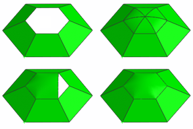

N 边曲面概述

使用 N 边曲面命令，可以创建由一组端点相连的曲线封闭的曲面。
可以执行以下操作：
-
通过使用不限数目的曲线或边建立一个曲面，并指定其与外部面的连续性(所用的曲线或边组成一个简单的开放或封闭的环)
-
移除非四个面的曲面上的洞或缝隙。
-
指定约束面与内部曲线，以修改 N 边曲面的形状
-
控制 N 边曲面的中心点的锐度，同时保持连续性约束
该命令对于想要光顺地修补曲面之间的缝隙，而无需修剪、取消修剪或改变外部曲面的边的设计师、新式样设计师和产品设计师是很有用的。
|
应用模块 |
建模和外观造型设计 |
|
工具条 |
曲面→N 边曲面 |
|
菜单 |
插入→网格曲面→N 边曲面 |